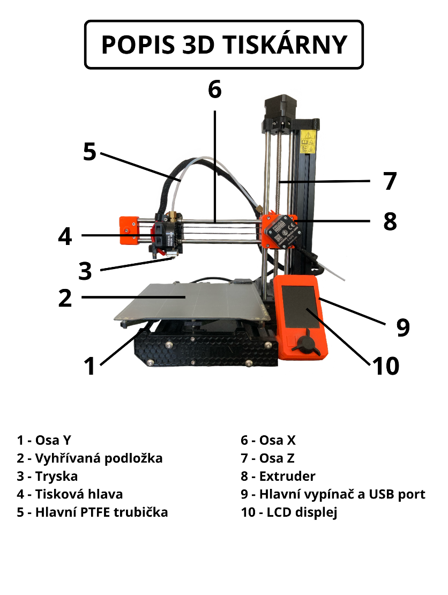
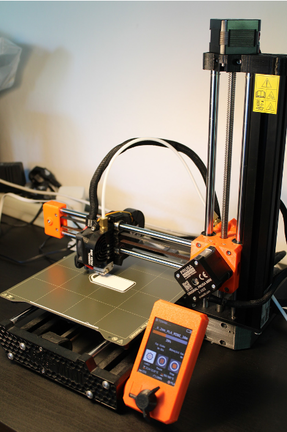
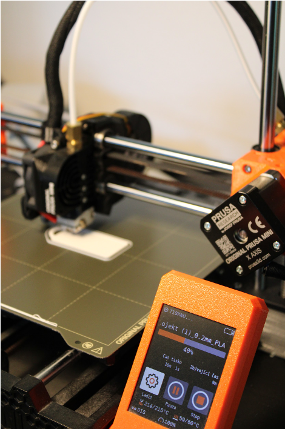
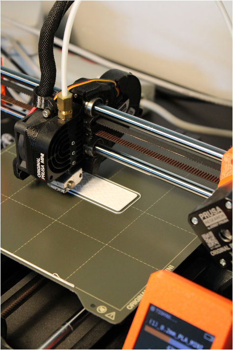

Princip 3D tisku
- 3D tisk je aditivní proces: z digitálního modelu uloženého v počítači se vytváří fyzický objekt vrstvením materiálu.
- Digitální model je rozřezán na tenké horizontální vrstvy, které se pak tisknou postupně.
- Opačným procesem je subtraktivní výroba (např. soustružení, vrtání).
Používané materiály
- Plasty
- Různé kovy (hliník, měď, ocel, titan)
- Beton, sklo
- Potraviny (např. čokoláda)
Technologie 3D tisku
- SLA (stereolitografie): UV laser vytvrzuje tekutý fotopolymer.
- SLS (Selective Laser Sintering): laser spéká práškový materiál.
- 3DCP (MIT): práškový materiál je spojován tekutým pojivem.
- FDM/FFF: nejrozšířenější technologie pro domácí tiskárny – vrstvení roztaveného plastu.
Využití 3D tisku
- Průmysl: výroba dílů s komplexní geometrií.
- Design: tvorba a testování prototypů.
- Kosmonautika: lehké a odolné díly (SpaceX).
- Medicína: zubní korunky, klouby, rekonstrukce lebky.
- Gastronomie: tisk cukrovinek, čokolády, jídel pro astronauty.
Stránky s hotovými 3D modely
Infografika a video

Autorské fotografie


